Freud, Lacan, Winnicott e Melanie Klein em guias ilustrados, organizados por autor e por tema. Entenda de verdade e revise em minutos antes da prova, por apenas R$ 10.
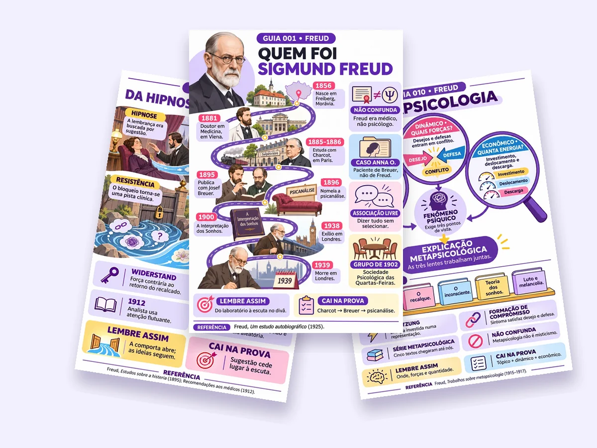
De Freud a Lacan e Winnicott: mapas, esquemas e fichas ilustradas para conectar suas leituras.
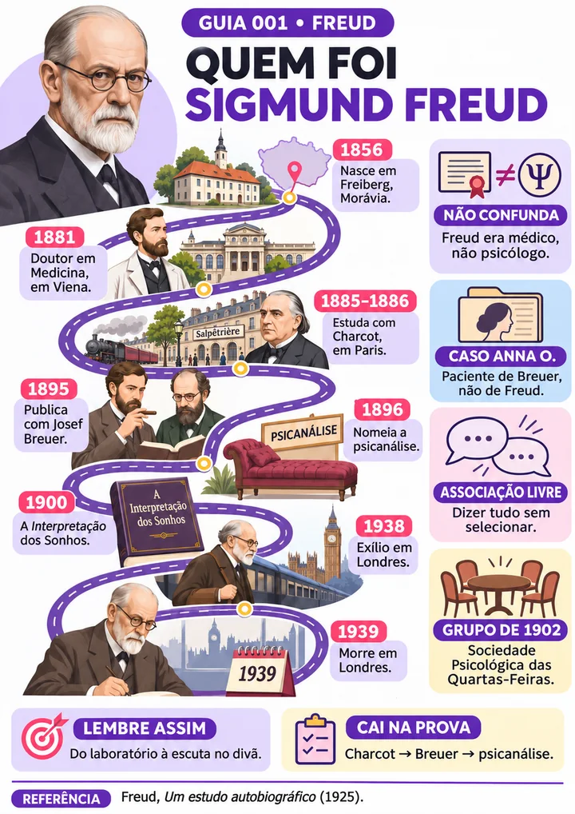
Guia 001 • Quem foi Sigmund Freud
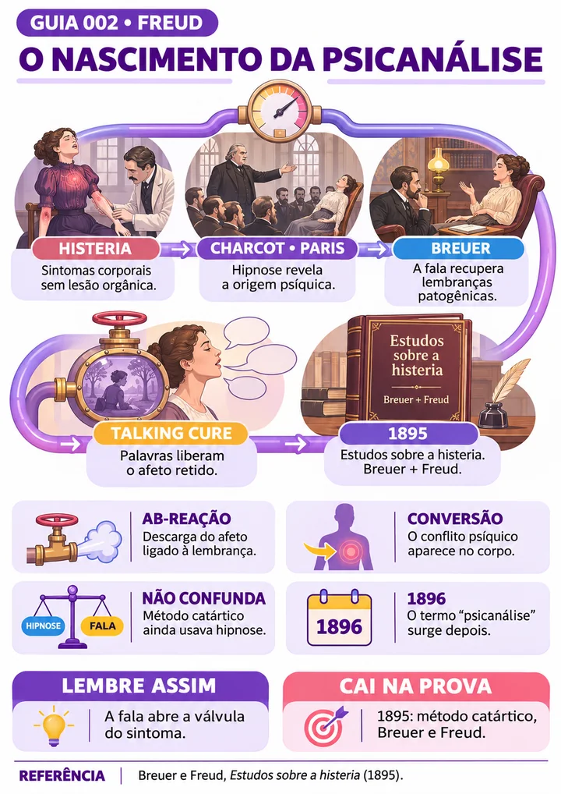
Guia 002 • O Nascimento da Psicanálise
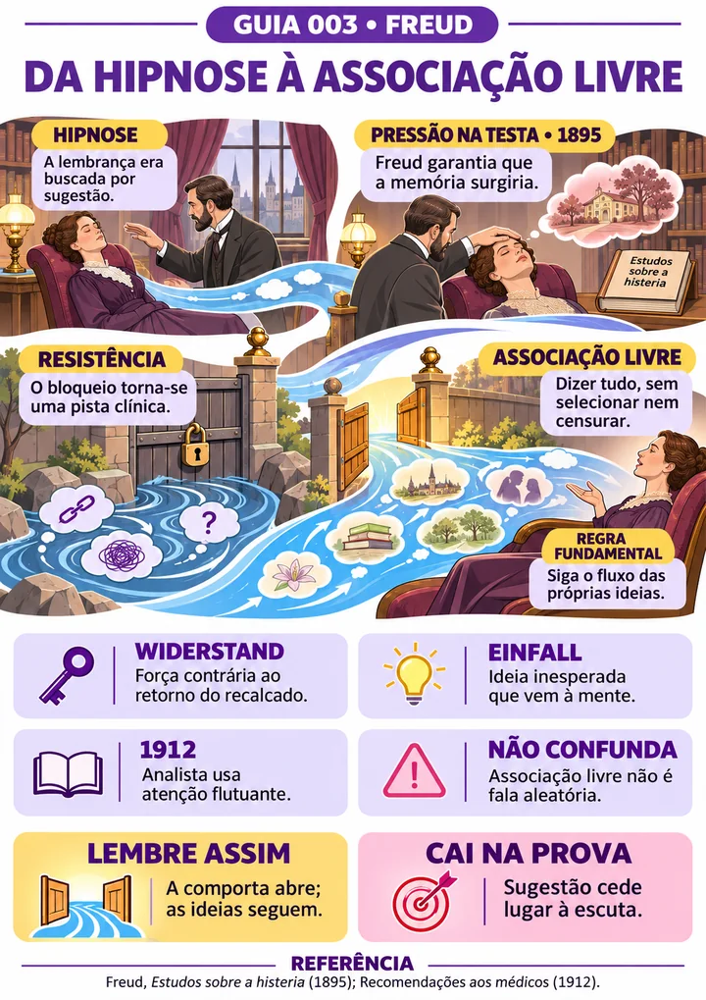
Guia 003 • Da Hipnose à Associação Livre
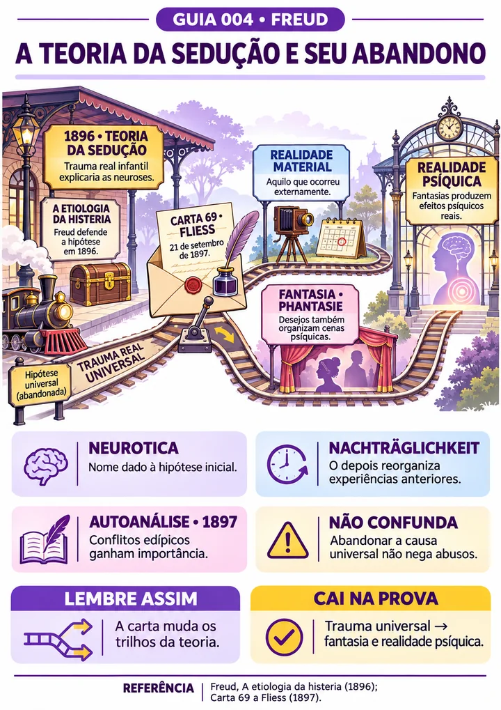
Guia 004 • A Teoria da Sedução
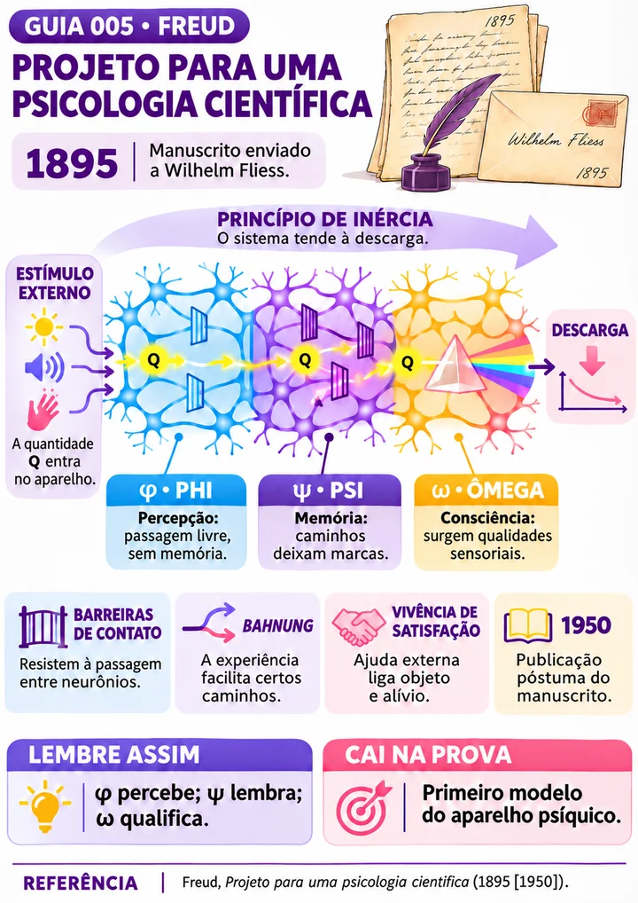
Guia 005 • Projeto para uma Psicologia Científica
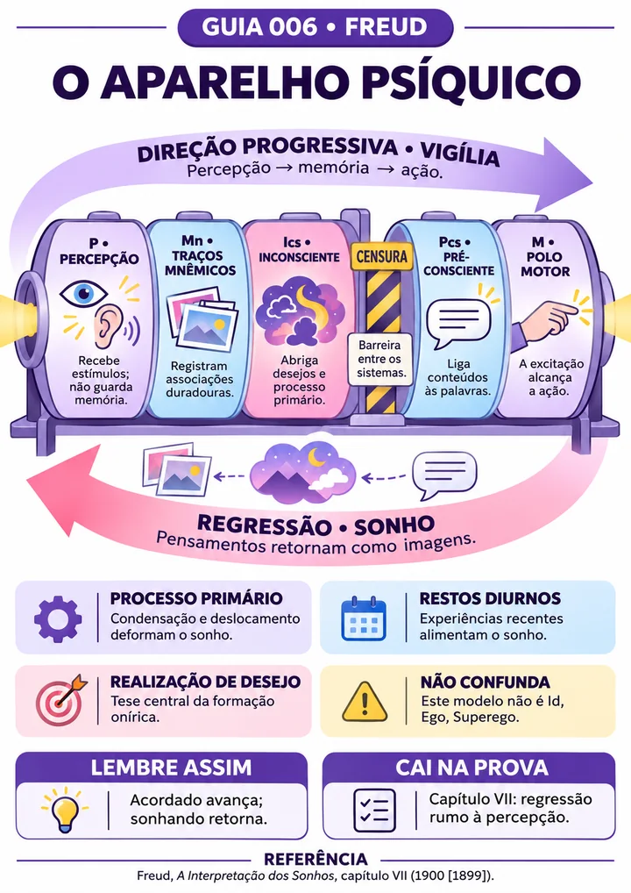
Guia 006 • O Aparelho Psíquico
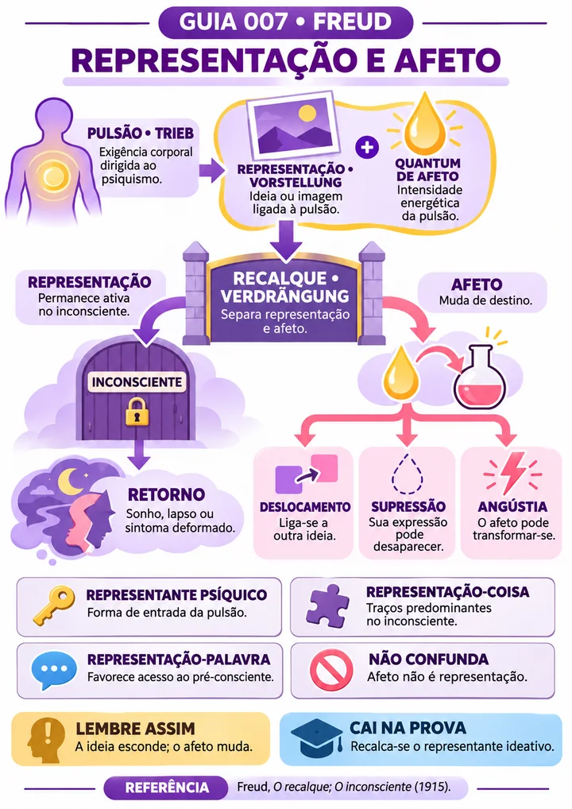
Guia 007 • Representação e Afeto
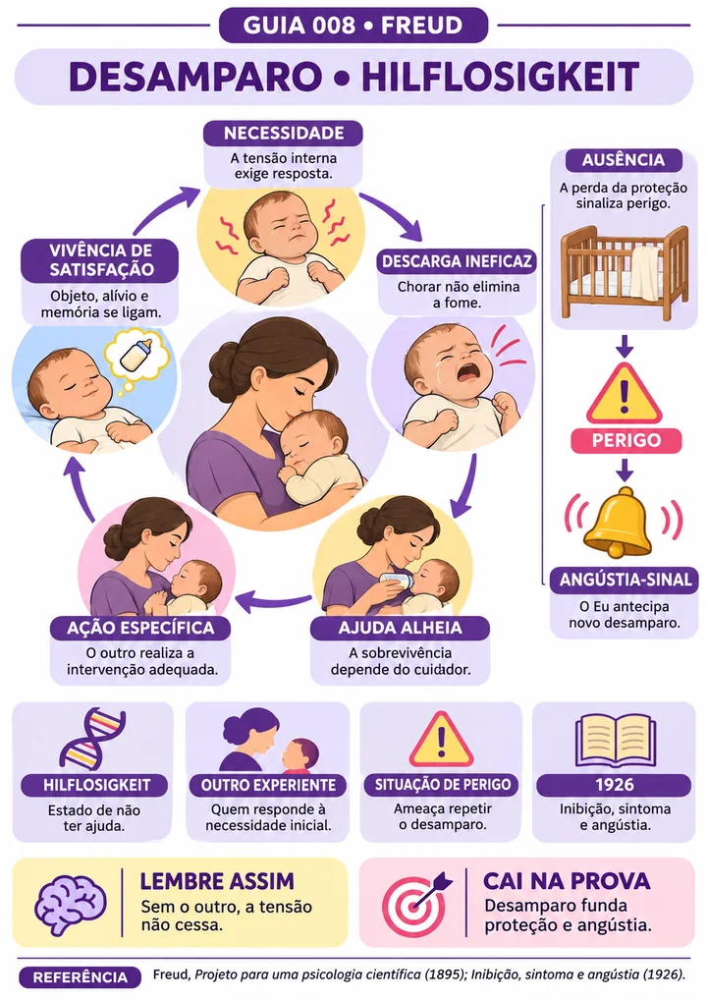
Guia 008 • Desamparo
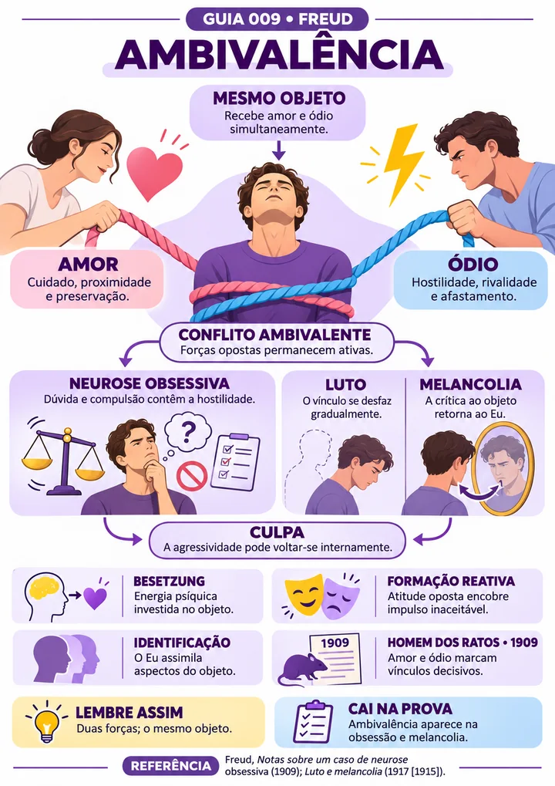
Guia 009 • Ambivalência
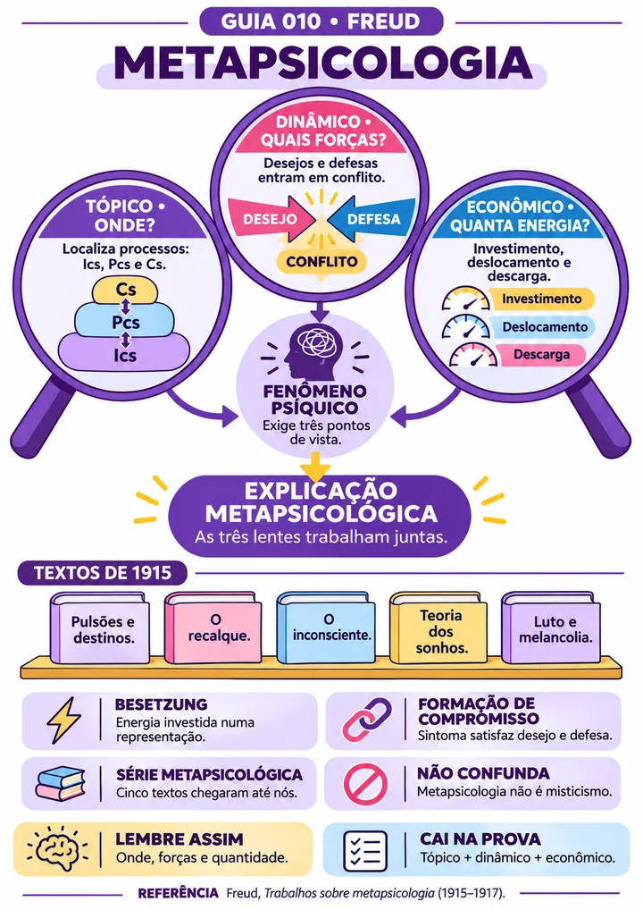
Guia 010 • Metapsicologia
Autores, escolas e conceitos diferentes: estudar psicanálise pode parecer um quebra-cabeça sem organização.
“Leio o texto três vezes e ainda não sei explicar o que é recalque.”
“Freud, Lacan, Winnicott… eu misturo as ideias de cada autor.”
“Na hora da prova, os conceitos simplesmente somem da cabeça.”
Tudo organizado por autor e por tema, em guias visuais fáceis de lembrar.
Guias ilustrados que transformam teoria densa em esquemas claros. Você lembra do desenho.
Freud, Lacan, Winnicott e Klein sem misturar as ideias.
Ideal para a véspera de provas, seminários e trabalhos.
PDF em alta resolução, otimizado para folha A4.
Abra no celular, no tablet ou no computador.
Pagamento único, sem mensalidade.
Guia 006 • O Aparelho Psíquico
Mais de 300 Guias Visuais organizados para você encontrar o que precisa em segundos:
Linha do tempo ilustrada com a vida, as obras e as rupturas que fundaram a psicanálise.
Termos essenciais de diferentes autores explicados de forma direta, para consulta rápida durante seus estudos.
Guia prático de interpretação dos sonhos: condensação, deslocamento e simbolização com exemplos.
Flashcards dos conceitos de psicanálise, com progresso e revisão espaçada direto no celular.
Freud, Lacan e Winnicott em perspectiva: ideias centrais e diferenças para organizar suas leituras.
Planejamento de leituras, anotações e revisões para manter uma rotina de estudos em psicanálise.
Exercícios sobre autores, teorias e conceitos, com respostas comentadas para revisar o que você estudou.
Acesso imediato. Pagamento único.
De R$ 128,00 por
Pagamento único • Acesso imediato
Pagamento por Pix ou cartão em ambiente seguro.
O acesso chega em instantes na sua caixa de entrada.
Estude no celular, no tablet ou imprima seus mapas.
Se por qualquer motivo você não ficar satisfeita com o material, basta pedir o reembolso dentro de 7 dias e devolvemos 100% do valor. Sem burocracia.
Logo após a confirmação do pagamento, você recebe no seu e-mail o acesso para baixar todos os arquivos em PDF.
Não. Os materiais são organizados do básico ao avançado, com linguagem clara, e servem tanto para quem está começando quanto para quem quer revisar.
Sim. Os arquivos estão em PDF de alta resolução e podem ser impressos em casa ou numa gráfica, em folha A4.
Sim. Os guias cobrem os autores e conceitos centrais cobrados nas disciplinas de psicanálise e Teorias da Personalidade, do primeiro ao último período. Também servem para seminários e concursos.
O Básico tem +150 Guias Visuais. O Completo tem +300 Guias Visuais e inclui os 7 bônus: Quem foi Sigmund Freud, Glossário, O Divã dos Sonhos, App de Revisão, Guia dos Autores, Planner de Estudos e Questões de Revisão.
Você tem 7 dias de garantia. Se não gostar, basta pedir o reembolso dentro desse prazo e devolvemos 100% do valor.
De R$ 128,00 por